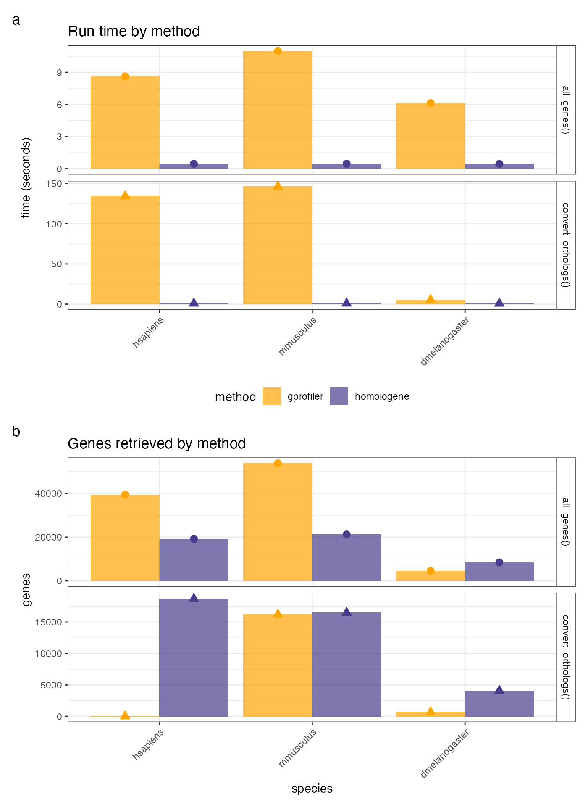
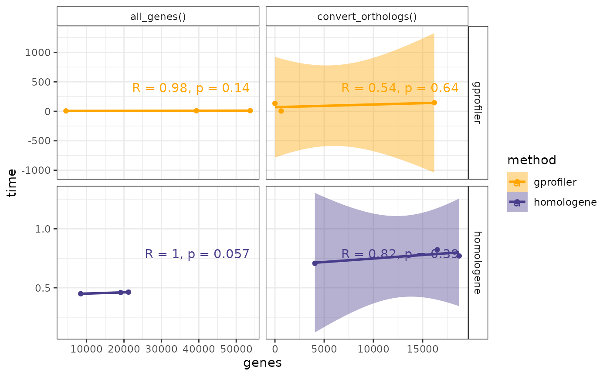

vignettes/benchmarks.Rmd
benchmarks.RmdBenchmark the following strategies:
method="homologene"
method="gorth"
For each method, benchmark the following metrics:
all_genes).map_orthologs).##
## Attaching package: 'dplyr'## The following objects are masked from 'package:stats':
##
## filter, lag## The following objects are masked from 'package:base':
##
## intersect, setdiff, setequal, unionRepeat tests across various common model organisms.
species <- c(human="H sapiens",
chimp="P troglodytes",
baboon="P anubis",
macaque = "M mulatta",
marmoset = "C jacchus",
mouse = "M musculus",
rat = "R norvegicus",
hamster = "M auratus",
dog = "C lupus familiaris",
cat = "F catus",
cow = "B taurus",
chicken = "G gallus",
zebrafish = "D rerio",
fly = "D melanogaster",
worm = "C elegans",
rice = "O sativa"
)
species_mapped <- map_species(species = species) %>% `names<-`(names(species))## Using stored `gprofiler_orgs`.## Mapping species name: H sapiens## 1 organism identified from search: hsapiens## Mapping species name: P troglodytes## 1 organism identified from search: ptroglodytes## Mapping species name: P anubis## 1 organism identified from search: panubis## Mapping species name: M mulatta## 1 organism identified from search: mmulatta## Mapping species name: C jacchus## 1 organism identified from search: cjacchus## Mapping species name: M musculus## 1 organism identified from search: mmusculus## Mapping species name: R norvegicus## 1 organism identified from search: rnorvegicus## Mapping species name: M auratus## 1 organism identified from search: mauratus## Mapping species name: C lupus familiaris## 1 organism identified from search: clfamiliaris## Mapping species name: F catus## 1 organism identified from search: fcatus## Mapping species name: B taurus## 1 organism identified from search: btaurus## Mapping species name: G gallus## 1 organism identified from search: ggallus## Mapping species name: D rerio## 1 organism identified from search: drerio## Mapping species name: D melanogaster## 1 organism identified from search: dmelanogaster## Mapping species name: C elegans## 1 organism identified from search: celegans## Mapping species name: O sativa## 1 organism identified from search: osativaNote the orthogene:::function notation is needed to use these benchmarking functions, as they are internal.
run_benchmark() will run the full benchmarking pipeline.
You can set mc.core to speed this up with multi-core parallelisation.
WARNING: This step can take a long time. For the purposes of this example, we’ll not run the full benchmark and instead provide some pre-computed results.
bench_res <- orthogene:::run_benchmark(species_mapped = species_mapped[c("human","mouse","fly")],
run_convert_orthologs = TRUE,
mc.core = 10)
# write.csv(bench_res, here::here("inst/benchmark/bench_res_example.csv"), row.names = FALSE)Load stored benchmark results.
if(!exists("bench_res")) {
bench_res <- read.csv(system.file(package = "orthogene","benchmark/bench_res_example.csv"))
}
knitr::kable(bench_res)| species | method | test | time | genes |
|---|---|---|---|---|
| hsapiens | homologene | all_genes() | 0.4597051 | 19129 |
| hsapiens | homologene | convert_orthologs() | 0.7699881 | 18713 |
| hsapiens | gprofiler | all_genes() | 8.6186595 | 39357 |
| hsapiens | gprofiler | convert_orthologs() | 134.0899084 | 1 |
| mmusculus | homologene | all_genes() | 0.4631681 | 21207 |
| mmusculus | homologene | convert_orthologs() | 0.8222713 | 16482 |
| mmusculus | gprofiler | all_genes() | 10.9749143 | 53725 |
| mmusculus | gprofiler | convert_orthologs() | 146.1204503 | 16189 |
| dmelanogaster | homologene | all_genes() | 0.4492853 | 8437 |
| dmelanogaster | homologene | convert_orthologs() | 0.7071683 | 4059 |
| dmelanogaster | gprofiler | all_genes() | 6.1289411 | 4493 |
| dmelanogaster | gprofiler | convert_orthologs() | 5.2325366 | 638 |
For each method, plot the run time (a) and the number of genes returned (b).
bench_barplot <- orthogene:::plot_benchmark_bar(bench_res = bench_res)
# ggsave(here::here("inst/benchmark/bench_barplot.pdf"),bench_barplot, height = 8)For each method, plot the relationship between number of genes returned and run time.
bench_scatterplot <- orthogene:::plot_benchmark_scatter(bench_res = bench_res)## `geom_smooth()` using formula 'y ~ x'
# ggsave(here::here("inst/benchmark/bench_scatterplot.pdf"),bench_scatterplot)
utils::sessionInfo()## R version 4.1.0 (2021-05-18)
## Platform: x86_64-pc-linux-gnu (64-bit)
## Running under: Ubuntu 20.04.2 LTS
##
## Matrix products: default
## BLAS/LAPACK: /usr/lib/x86_64-linux-gnu/openblas-pthread/libopenblasp-r0.3.8.so
##
## locale:
## [1] LC_CTYPE=en_US.UTF-8 LC_NUMERIC=C
## [3] LC_TIME=en_US.UTF-8 LC_COLLATE=en_US.UTF-8
## [5] LC_MONETARY=en_US.UTF-8 LC_MESSAGES=C
## [7] LC_PAPER=en_US.UTF-8 LC_NAME=C
## [9] LC_ADDRESS=C LC_TELEPHONE=C
## [11] LC_MEASUREMENT=en_US.UTF-8 LC_IDENTIFICATION=C
##
## attached base packages:
## [1] stats graphics grDevices utils datasets methods base
##
## other attached packages:
## [1] patchwork_1.1.1 ggplot2_3.3.5 dplyr_1.0.7 orthogene_0.1.0
##
## loaded via a namespace (and not attached):
## [1] httr_1.4.2 sass_0.4.0
## [3] tidyr_1.1.3 splines_4.1.0
## [5] jsonlite_1.7.2 viridisLite_0.4.0
## [7] carData_3.0-4 here_1.0.1
## [9] gprofiler2_0.2.0 bslib_0.2.5.1
## [11] assertthat_0.2.1 highr_0.9
## [13] cellranger_1.1.0 yaml_2.2.1
## [15] pillar_1.6.1 backports_1.2.1
## [17] lattice_0.20-44 glue_1.4.2
## [19] digest_0.6.27 ggsignif_0.6.2
## [21] colorspace_2.0-2 htmltools_0.5.1.1
## [23] Matrix_1.3-4 pkgconfig_2.0.3
## [25] broom_0.7.8 haven_2.4.1
## [27] purrr_0.3.4 scales_1.1.1
## [29] openxlsx_4.2.4 rio_0.5.27
## [31] tibble_3.1.3 mgcv_1.8-36
## [33] farver_2.1.0 generics_0.1.0
## [35] car_3.0-11 ellipsis_0.3.2
## [37] ggpubr_0.4.0 withr_2.4.2
## [39] cachem_1.0.5 lazyeval_0.2.2
## [41] magrittr_2.0.1 crayon_1.4.1
## [43] readxl_1.3.1 memoise_2.0.0
## [45] evaluate_0.14 fs_1.5.0
## [47] fansi_0.5.0 nlme_3.1-152
## [49] rstatix_0.7.0 homologene_1.4.68.19.3.27
## [51] forcats_0.5.1 foreign_0.8-81
## [53] textshaping_0.3.5 tools_4.1.0
## [55] data.table_1.14.0 hms_1.1.0
## [57] lifecycle_1.0.0 stringr_1.4.0
## [59] plotly_4.9.4.9000 munsell_0.5.0
## [61] zip_2.2.0 compiler_4.1.0
## [63] pkgdown_1.6.1 jquerylib_0.1.4
## [65] systemfonts_1.0.2 rlang_0.4.11
## [67] grid_4.1.0 htmlwidgets_1.5.3
## [69] labeling_0.4.2 rmarkdown_2.9
## [71] gtable_0.3.0 abind_1.4-5
## [73] DBI_1.1.1 curl_4.3.2
## [75] R6_2.5.0 knitr_1.33
## [77] fastmap_1.1.0 utf8_1.2.2
## [79] rprojroot_2.0.2 ragg_1.1.3
## [81] desc_1.3.0 stringi_1.7.3
## [83] parallel_4.1.0 Rcpp_1.0.7
## [85] vctrs_0.3.8 tidyselect_1.1.1
## [87] xfun_0.24